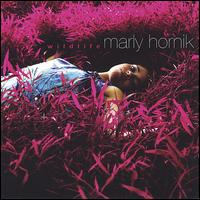

Wildlife
Marly Hornik • Artist • Feb 2006
New York resident Marly Hornik is among the more promising female singer/songwriters who made her recording debut in the early 2000s. For Hornik, the phrase "female singer/songwriter" has not been synonymous with "angry young woman." Unlike many of the "angry young women" who emerged in the ?90s--Alanis Morisette, Tracy Bonham, Ani DiFranco, among others--Hornik has not brought an abundance of angst and anger to her pop-rock and adult alternative songs. Nor is she the type of artist who celebrates dysfunction and self-loathing; you won't find Hornik writing a bunch of songs about being attracted to guys who mistreat and disrespect her. In fact, her writing has been optimistic and hopeful more often than not, which isn't to say that she is a Polyanna or that she is mindlessly cheerful and devoid of street smarts. Hornik (who plays both acoustic piano and electric keyboards) can write about dark subject matter when she puts her mind to it, but ultimately, she comes as across as someone who tends to see the glass as half full rather than half empty. Hornik put it best when she was quoted as saying that her music contains "elements of comfort and discomfort, like life." The Manhattan resident also comes across as someone who has a strong appreciation of melody; highly melodic and tuneful, she has obviously been greatly influenced by the ?70s recordings of Carole King. Reviewers have often compared Hornik to King, and another frequent comparison has been former 10,000 Maniacs singer Natalie Merchant. But Hornik doesn't go out of her way to emulate any of her influences--she is distinctive and recognizable herself. Unlike King, Hornik is not a native New Yorker. She was born in Virginia and grew up in Massachusetts, but eventually, the singer/songwriter ended up moving to the Big Apple and having frequent gigs in Manhattan. Instead of sitting around waiting for a label to sign her, Hornik decided to be proactive and put out some CDs herself. Hornik released her debut EP, Liberty Heights, independently in the first half of 2001 and sold it on her marlyhornik.com website. Then, in late 2001, she put out a single titled "Ground Zero", which was inspired by the terrorist attacks of September 11, 2001. (One can tell that the photo session for Liberty Heights took place before those attacks because the front cover shows Hornik standing outside in Lower Manhattan with the World Trade Center's Twin Towers in the background). In 2002, Hornik recorded her first full-length album, Say You Do, which was produced by guitarist Charlie Crystle.
- Alex Henderson, All Music Guide